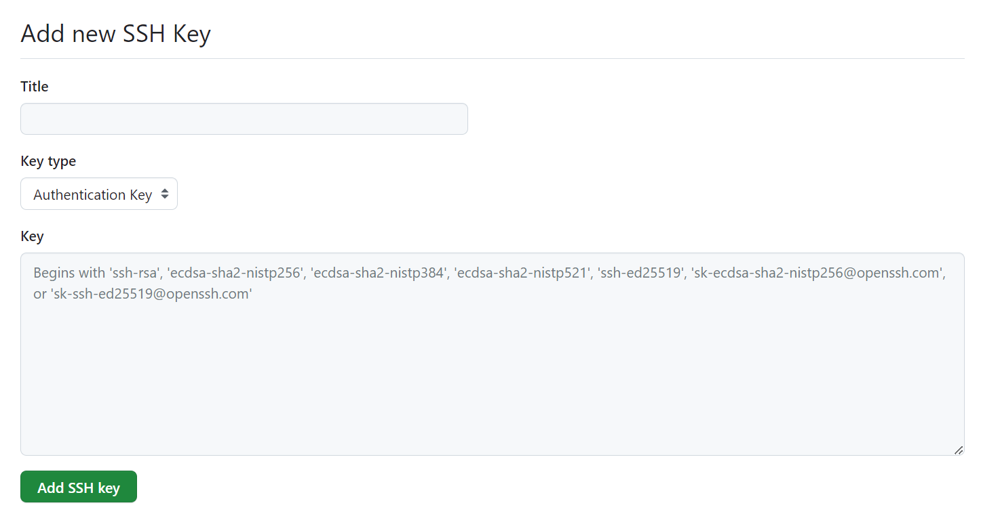
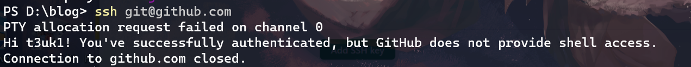

Git的绑定与连接
配置Git的User
打开Git Bash（或命令行）
配置全局name：
-
github用户名
1
git config --global user.name name
配置全局email：
-
github邮箱：
1
git config --global user.email email
以我自己的github账户为例：
1 | git config --global user.name t3uk1 |
使用SSH方式远程连接Git
打开Git Bash（或命令行）
在本地生成对应邮箱的SSH RSA公钥密钥
1 | ssh-keygen -t rsa |
使用默认生成路径，默认空key，这样就可以无需认证直接连接，如果想要设置秘钥也可以设置。
前往 ~/.ssh 目录下寻找密钥（其中默认**id_rsa是密钥信息，id_rsa.pub**为公钥信息）
在 Github 中新建 SSH keys：
github→ Settings→SSH and GPG keys→右上角new SSH key， 打开界面如下：

其中Title可以随意填，Key中内容填的是前面生成的(id_rsa.pub)的文件内容即公钥信息。
创建完成后，运行下面的指令，若出现下图情况则说明成功。
1 | ssh git@github.com |
